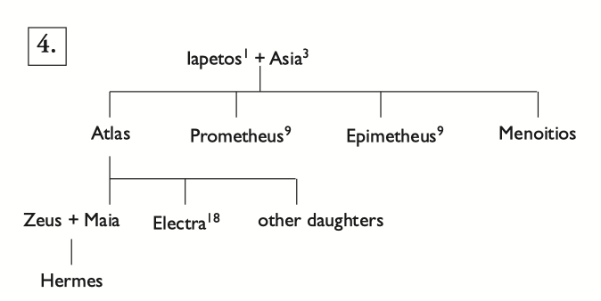
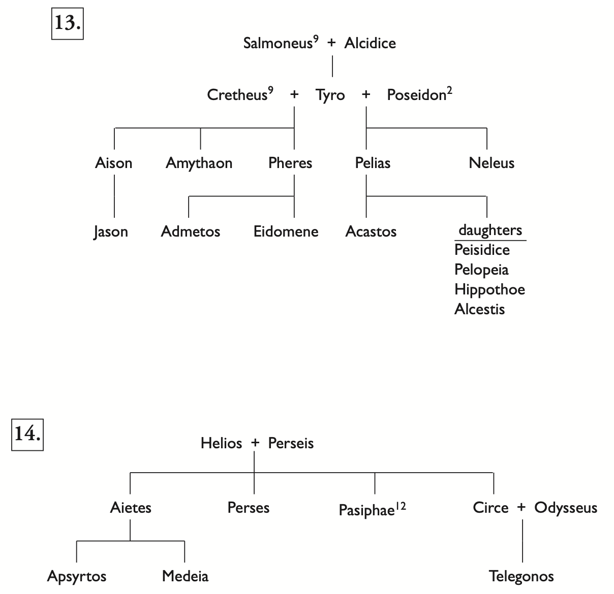

Keywords review for midterm
Note that this list only contains keyterms that I'm not entirely sure of. Lots of them omitted for the sake of time.
Concepts
- aetiology: a story explaning a cause or origin.
- anthropomorphism: attaching human traits to non-humans.
- apotropaic: averting bad luck.
- autochthonous: born from earch. birth of Erichthonios by Hephaistos and Athena + Gaia.
- chaos: void, not chaos.
- chthonic: related to earth and underworld, e.g. giants (created when Ouranos' blood shed on earth)
- cosmogony: birth of the cosmos and order. It's a process instead of an event.
- epithet: nicknames.
- Eros and Erotes: love and plural loves.
- muthos and logos: myths and thinking in greek. This indicates that myths are more than just stories. They are also narratives for religions and rituals, explanations of how the world works, samples of how we should behave and thought experiements.
- omophagy: eat raw meat.
- pantheon: all the gods that are worshipped.
- partheno: virginity, asexuality, usually refers to Athena. parthenogenesis: virgin birth.
- polytheism: worship of multiple gods.
- theogony: birth of the gods.
Places
- Acropolis: associated with Athena.
- Arcadia: where Hermes was born.
- Areopagos: hill of Ares. Homocide trials.
- Bosporos: where Io went to when she was chased by Hera, "cow crossing"
- Crete: where Zeus was raised.
- Delos: where Leto gave birth.
- Delphi: Apollo's sacred place.
- Dodona: Zeus' sacred place where he gives out prophecies and oracles.
- Eleusis: where Demeter went to to search for Persephone. Surrounding this area there are Eleusinian Mysteries, which are rituals practiced for Demeter and Persephone.
- Lemnos: where Hephaistos was raised.
- Mount Aetna: where Typoon was buried. His restless turnings were the cause of earthquakes and lava-flows.
- Mount Ida: where Zeus was concealed on Crete.
- Mount Kyllene: where Hermes lived as a child.
- Mount Olympos: where the Olympians were during and after Titanomachy.
- Mount Othrys: where the Titans were during Titanomachy.
- Kypris: where Aphrodite was born.
- Kytherea: Aphrodite's temple.
- Tripod: Pythia sits here to produce her oracles at Delphi.
Things
- adamant: the weapon given by Gaia that Cronos used to castrate his father Ouranos.
- ambrosia and nectar: food that the gods consume.
- obol: the coin the dead use for Charon to carry them across the river Acheron.
- phallus: a penis-like object that marks boundaries.
Names
Titans
12 Titans:
They are offsprings of Ouranos and Gaia.
Oceanos ("ocean"), Coios, Crios, Lapetos, Hyperion("Going Above"), Cronos, Tethys, Phoebe, Themis("Divine Law"), Mnemosyne("Memory"), Theia, Rheia, Pontos("Sea")
First-gen Titans:
Oceanos, Rheia, Lapetos, Cronos, Hyperion, Mnemosyne, Tethys
- Cronos/Saturn: sky, married Rheia, and castrated his father Ouranos with the help from his mother Gaia
he suppresses his offsprings by swallowing them but his wife Rheia managed to save Zeus, with the help from Gaia and Ouranos
- Mnemosyne: memory, mother of the muses
- Tethys
Olympians
12 Olympians:
Zeus, Hera, Poseidon, Demeter, Hestia/Dionysos, Hades, Aphrodite, Apollo, Ares, Artemis, Athena, Hermes, Hephaistos
First-gen Olympians:
Zeus, Hera, Poseidon, Demeter, Hestia, Hades
- Zeus
- Names: Jupiter
- Domains: law, oaths, justice, kingship, politics, (excess) power
- Symbols: thunderstorm, scepter, throne, eagle, Mt.Olympos
- Demeter
- Names: Ceres
- kourotrophos: nurturer of children. Demeter nurtured Demophon.
- Daughter: Persephone (Proserpina, kore)
- Poseidon
- Names: Neptune
- Domains: uncontrollable strengths
- Sons: Polyphemos (single-eyed), Triton (fish-tailed)
-
Hera
- Names: Juno
- Domains: marriage
- Children: Ares, Eileithyia (childbirth), Hebe, Hephaistos (by herself)
-
Hades
- Names: Pluto
- Domains: underworld, wealth, death
- Symbols: scepter, cornucopia
-
Hestia
- Names: Vesta
- Domains: hearth, oikos ("home")
- Athena
- Names: Minerva, Pallas (Greek), Tritogenia
- Domains: wisdom, (rational) wars, woman's crafts: weaving, etc.
- Symbols: aegis, halmet, shield, spear, Nike, owl
- Aphrodite
- Names: Venus
- Symbols: dove and geese
- Children: Phobos and Deimos (“Fear” and “Terror”, with Ares)
- Hephaistos
- Vulcan
- Domains: hard crafts
- Ares
- Names: Mars
- Domains: bloody wars, accompanied by Eris ("strife")
- Children: mentally monstrous, but not physically monstrous
- he is the most hated god
-
Apollo
-
Artemis
- Names: Diana
- Domains: virginity, transitory satate, blood, outside civilization (liminal: "threshold")
-
Hermes
- Names: Mercury, Argus slayer
- Domains: messenger, trickster, commerce, thieves, travelers, boundaries
- Symbols: caduceus, winged sandals, winged hat
-
Dionysos
- Names: Bacchus, Father Liber
- Domains: wine, mania, theater, transitory state
- Symbols: thyrsos (grape wand), ivy, grapes, kantharos (cup), satyrs and maenads
Other gods
Ancient gods
- Boreas("north wind"): Hyperion (titan, "going above") => Eos ("dawn") => Boreas
- Eris("strife"): Nyx ("night") => Eris, 15 beings related to conflict and suffering
- Gaia/Ge("earth"):
- Gaia + Ouranos: titans, kyklopes, hundred-handers
- Gaia + Pontos: sea gods and sea monsters
- Gaia + Tartaros: Typoon
- Nyx("night"): chaos => Nyx
- Ouranos/Uranus: suppresses offsprings by eating them, castrated by his son Cronos
- Pontos: sea. Pontos + Gaia => sea monsters and sea gods. Pontos alone => Nereus ("the old man of the sea")
- Tartaros: deep pit
- Zephyros("west wind"): Hyperion (titan, "going above") => Eos ("dawn") => Zephyros
Humans
- Adonis
- Agave/Agaue: doubted Semele's presence. punished by Dionysos.
- Aineias (Aeneas): son of Aphrodite and Anchises.
- Aktaion: saw Artemis bathing.
- Arachne: challenged Athena to weave, turned into a spider.
- Hesiod: a sheperd into a poet. Wrote Theogony under the inspiration of the muses.
- Hyakinthos: Apollo's Ephebe lover.
- Women/Ephebes seduced by Zeus.
- Europa: bull. daughter of Agenor. sons: Minos, Rhadamanthys, Sarpedon
- Lida: swan. queen of Sparta. daughter: Helen (w/ Zeus). sons: Polydeukes, Kastor (w/ Zeus), Klytaimnestra.
- Ganymede: trojan prince. replaces Hebe, Hera's daughter. erastes (lover) + eromenos (beloved)
- Io: turned into a cow guarded by Argos.
- Kallisto: follower of Artemis, expelled after found pregnant. turned into a bear by Hera. son: Arkas.
- Koronis: Apollo's lover, she betrayed her and was killed by Artemis.
- Marsyas: competed with Apollo to play instruments, punished.
- Orion: loved Artemis and tried to raped her. killed.
- Pythia: high priestess of the Temple of Apollo at Delphi
- Smyrna/Myrrha: mother of Adonis. transformed into a myrrha tree because she fell in love with her father.
- Teiresias: turned from man to woman then back. blined by Hera.
- Triptolemos: learned sewing, ploughing, reaping from Demeter.
Animals and monsters
- Amaltheia: the devine goat that nurtured Zeus on Crete. Turned into a star. Source of Zeus' aegis, which he shakes to induce terror in armies.
- Argos: the hundred-eyed monsters that guarded the cow Io turned into.
- Giant: created by the earth and the blood spilt when Ouranos was castrated. Fought giantomachy with Zeus. Defeated (barbarism defeated).
- Kyklopes: offsprings of Ouranos + Gaia. Zeus' ally during titanomachy. Forged Zeus' lightenings.
Keywords review for final
More concepts
- Authropogony: humans are created.
- Anthropomorphism: similar to personification; attaching human traits to animals or divine figures.
- Autochthomous: from the land; related to local myths; contrast to migration or colonization.
- Catasterism: constellation.
More places
-
Arcadia:
Names: Lykaon, Atalanta, Hermes
-
Calydon:
Names: Oineus(king), Meleager
-
Corinth:
Names: Bellerophon, Sisyphos
-
Crete:
Names: Zeus, Pasiphae
-
Troy:
Names: Paris
Monsters
-
Echidna:
Half woman half serpent.
Offspring of Phorky and Keto. Wife of Typhon. Many monstrous offsprings:
- Chimera: three-headed beast with the head of a lion, head of a goat, and head of a serpent. killed by Bellerophon.
- Kerberos: three-headed hound of Hades.
- Lernaian Hydra: Lerna (swamp). multiple heads. heads burnt by Heracles -> poisonous arrows. the crab that pinched Heracles -> constellation Cancer.
- Sphinx: offspring of Oithos and Chimera. woman's head, lion's body, wings. defeated of Oidipous.
- Nemean Lion: offspring of Oithos and Chimera. skin that cannot be pierced, skinned w/ his own claws by Heracles. constellation Leo.
-
Sirens: part bird, part woman, beautiful voices that leads to death ("Muses of the underworld").
Promises eternal glory but you'll die. -> fame but fame after death.
Kill themselves when they fail to seduce the listeners??
- w/ Argonauts: Orpheus (son of a Muse) sang more beautifully; see story of Orpheus below.
- w/ Odysseus: tied to the ship; other crew members used wax.
Stories
The Argonauts
Calydonian Boar hunt
-
Atlanta
Abandoned by her father (different versions) because he wanted a son.
First blood in the Calydonian boar hunt, awarded the hide.
Defeated in a footrace w/ Hippomenes/Milanion, who threw golden apples to distract her. Married.
-
Meleager
The Moirai predicted that he would die when the log burned out. His mother Althaia hid it until he killed his uncle in the boar hunt. She burnt it and killed him. Then she killed herself.
Other people associated w/ Meleager:
- Tydeus: one of the seven against Thebes. Meleager's half-brother.
- Deianeira: wife of Heracles. Meleager's sister.
-
Bellerophon
killed the Chimera w/ Pegasus.
Pegasus was born from Medusa's blood when Perseus cut off her head. Other version: Poseidon was his father.
The Trojan War
Hubris
In English: "excessive pride" vs In Greek: "outrage", "insolence", "arrogance", "excessive violence".
Hubris is a mal-functioning relationship between human and divine. Proper mode of interaction (animal sacrifice) -> no sacrifice or improper sacrifice.
- Arachne: challenged Athena to weave, turned into a spider.
- Bellerophon: positive: slayed the Chimera; refused to sleep with the wife of his host (behave well in human society)
negative: tried to reach Mt.Olympos with Pegasus.
-
Danaides: the fifty daughters of Danaos; killed their husbands (sons of Aigyptos, Danaos's brother); punished to fill up a jar w/ a hole.
Hypermnestra: spared her husband Lynkeus.
- Erysichthon: chopped down the tree and the tree spirit ("Dryad") prayed to Demeter for vengeance; eternal hunger and ultimately ate himself.
-
Ikaros: flying is hubristic -> fallen into the Ikarion sea.
Daidalos: killed his nephew Perdix because Perdix was also skillful; built the Labyrinth for Minotaur on Crete; invented wax wings to escape Crete.
- Ixion: offened Hera; tied to a spinning wheel forever.
-
Lykaon: king of Arcadia; treated Zeus with human flesh; impiety towards human (killing them) and impiety towards gods (testing Zeus); entire household destroyed, turned into a wolf.
Linos: one of the sons of Lykaon; killed by Zeus.
- Marsyas: competed with Apollo to play instruments, punished.
- Minos: vowed to sacrifice the bull to Poseidon but didn't; as a punishment his wife Pasiphae fell in love w/ the bull.
- Niobe: mocked at Leto, Artemis and Apollo killed all her children.
- Phaethon: human son of Helios; rode the chariot, struck by Zeus with his thunderbolt. aetiological stories for different climate (when he drove the chariot) and amber (his sisters cried over his fallen body and turned into trees that produced amber).
- Sisyphos: tricked Death and claimed that he was cleverer than Zeus; punished to constantly push up a stone.
- Tantalos: served his son Pelops; version 2: shared ambrosia and nectar w/ neighbors; eternal punishment -> tantalized.
- Tityos: offened Leto; two vultures constantly picked out his liver.
Heroes
Shared features of heroes: dead; worshipped; divine percentage (don't fit in human society); greater but not necessarily better; passive greatness.
The race of heroes eventually die out (Trojan war as a wipe-out plan?)
Types of heroes:
- foundation heroes: establish city, custom... e.g. Prometheus, Kadmos
- civilizing heroes: overcome disorder; kill monsters... e.g. Perseus
- traveling/questing heroes: tranform spacial boundaries; reach Hyperborea (far north), Hesperia (far west)... e.g. Jason
- culture heroes: introduce a skill, craft, technology ("techne")...e.g. Triptolemos (sowing)
Hero worship (epichoric vs panhellenic):
- heroon: a shrine for a hero, usually a tomb. ("niasma" -> pollution caused by the dead)
- holocaust: whole burning; you shouldn't share food with the dead
- blood libation
Perseus
Heracles
Appearance: lionskin cloak, club (uncivilized), bow and arrow (civilized).
Characteristics: physical: strength, violence; sexual: endurance; appetite for food and wine
Games established: Olymbic games, Nemean games, Pythian games
Birth and youth:
- mortal father: Amphitryon; divine father: Zeus; mother: Alkmene; Zeus disguised as Amphitryon before he came back from battle.
- Hera's hatred: sent Eileithyia to delay his birth -> Eurystheus (his cousin) ruled Greece instead of Heracles. half-brother: Iphikles
- Hera milked him -> aetiological story of the milky way.
- Lyre teacher Linos (son of Apollo) smashed by Heracles
- first wife Megara and their children smashed by Heracles
The ten/twelve labors and Parerga (side works): -> Delphi oracle
- The Nemean Lion: w/ help from Athena; pierced the lion skin w/ its own claws. Nemean games. constellation Leo.
- (not counted)Lernaian Hydra: w/ help from Iolao, who helped Heracles burnt the heads he chopped off. Since there is help this one isn't counted.
- Erymanthian boar: brought to Eurystheus alive, who hid in a pithos. Chiron was killed by accident by an arrow during this event??
- Keryneian hind: a deer sacred to Artemis, captured after year-long pursuit.
- (not counted)
Angeias' stables: change the courses of two rivers to wash it. King Angeias didn't pay so this one isn't counted. Killed by Heracles.
establishing the Olympic games??
- Stymphalian birds: man-eating birds; shoots/strangles/frightens them off.
- The Cretan bull: the bull of Minos and Poseidon; also the Marathonian bull killed by Theseus.
- Diomede's mares: man-eating horses; Diomedes was fed to his horses.
- Hipplyta's belt: Hera claimed that Heracles would snap their queen so Heracles had to kill her to get the belt.
- Geryon's cattle: Heracles threatened Helios to use his golden bowl to cross the sea; killed Geryon (three-bodied man).
-
Golden apples: garden of Hesperides; either tricked Atlas or just smashed everything.
Antaios: son of Poseidon and Gaia; wrestled with Heracles and killed on his way to fetch the golden apples.
- Kerberos: multi-headed dog of Hades; subdued without using weapons; Eurystheus hid in pithos.
Hubris:
- Apollo's tripod: Pythia refused to give Heracles an oracle, so he stole her tripod; origin of the Pythian game.
-
Helios' golden bowl
- he shot the sun so that Helios was threatened to give him his golden bowl.
- he shot the ocean because the golden bowl shook too much... lol that was kinda funny...no idea why though
Death and immortality:
- death:
- Nessos abducts his wife Deianeira
- Deianeira uses Nessos' blood to make a love potion
- Heracles wears the poisoned cloak and dies
- Philoktetes and his father got his bow and arrows in return for lighting his funeral pyre.
-
immortality (apotheosis):
- golden apple of the Hesperides
- descent to the underworld
- defeat of death in a wrestling match
- defeat of old age
- purification through fire after mortal death
- marriage w/ Hebe after he became a god
Theseus
Families
Atlas' family
- Iapetos: Zeus' cousin
- Atlas: "endurer"; hold the sky in the far west
- Prometheus:
"foresight"; the trick at Mekone ("ekrinonto"): instructed human to trick Zeus (cover meat w/ innards, bones w/ fat; aetiology) -> function of sacrifice is to divide ("dais")
theft of fire (necessary for sacrifice, which allows communication w/ gods)
punishment: the caucasus mountain (far east)
we are descendants of Prometheus; see below Deukalion and Pyrrha
- Epemetheus: "hindsight"
- Pandora: "all gifts"; marries Epemetheus w/ a jar (pithos; significance of agriculture) of all evils and hope (is hope a good thing?)
- Deukalion: son of Prometheus; survived the flood because of of their respect for the gods; shrine of Themis ("divine right"), oracle "bones of upir mother"
- Pyrrha: Deukalion's wife; daughter of Pandora and Epemetheus
- Hellen: "Greek man"; son of Deukalion and Pyrrha

Kadmos' family
Oidipous' family
Jason and Medeia's family
Curses: foreigners are tools of gods.
- Aiete's family: cursed by Aphrodite; sister killed brother.
- Pelias' family: cursed by Hera; daughter killed father.
- Jason's family: cursed by Zeus; future bride at hands of children.
- Jason and Medeia's family: cursed by Zeus; mother killed children.
- Aigeu's family: father almost killed son.
Main Characters:
- Jason:
- Medeia:

Other Names
- Midas: showed hospitality to a satyr, granted the wish to turn things into gold. Later washed away this boon in river (aetiological story why there is gold in that river).
- Orpheus: son of Kalliope w/ Apollo/Oiagros, one of the Argonauts. marries Eurydike, who was bitten by a snake and died on their wedding day. descent to the underworld, looked back. withdrawn from society -> death. constellation: Lyra.
Essays
These are essays I composed for this lesson. I'm not showing the prompts here, since they belong to the course, not me :)
Please just read them online and don't spread them or download them. They are very raw drafts.